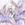

|

Cloud-Dreamer
Author of 15 Stories |
A Ranma crossover fanfic
Started - 1 February 2003 Completed – 12 June 2003
Last revised - 10 May 2004 Reason - typos
Characters are from Ranma ½, Sailor Moon and Ah, My Goddess. They are used without permission or profit. This is a form of literary tribute to the original authors and no copyright infringement is intended.
Note, Chapter one is a bit dark, please do not judge the whole story on the basis of this first chapter
Chaotic Future . . . by . . . Cloud Dreamer
Chapter one - Tomboy blues
He sat and pondered awhile before finally deciding. He quickly entered the commands into the system and sat back to wait for the appropriate cues to appear. There was more than one way to save the world. He grinned; this would also be a bit fun as well.
Skuld smirked to herself, 'these mortals are just so weird.' She had been watching her sister Belldandy to make sure that Bell's romance didn't get out of hand. Meaning, if she had a say in it, that zero forward progress was made. After all NO mortal was good enough for her sister. Bell and Keiichi had decided to attend a college event together. In this case, a group of fans of the TV shows 'Xena' and 'Hercules' were meeting several of the stars from these programs and doing their best to play act some of the roles and their fantasies out as well. It was chaotic, to say the least, and amusing as well. She'd have to tell Hercules all about this the next time she saw him. She grinned to herself; 'poor Herc' had been hiding his face from embarrassment a lot recently.
Cologne grinned as she looked out over the busy crowd. She and Nabiki had jointly planned this little excursion into the college crowd market now that Nabiki was in her first year of college. The convention was the money maker that Nabiki had promised and Cologne stood to make a small fortune this weekend even after all the operating expenses and Nabiki's cut were paid. She watched Nabiki stalk over to another table, a forced smile on her face. Cologne had turned the tables on her, so to speak. Running desperately short of help because of their overwhelming success, she'd told the crafty girl that Nabiki would forfeit her share if she failed to do her part to make sure this venture worked. So Nabiki was working along with her sisters, Shampoo and Ranma. Cologne snickered to herself; Nabiki didn't know that Cologne didn't intend to pay her extra for being a waitress. After all, if Nabiki's cut also included the wages for Ranma and her sisters, then it also included her own wages automatically. Cologne was sure she'd scream but, well, it was all according to how the contract was interpreted.
Kasumi winced as she watched Akane pull out a glowing mallet and flatten another 'pervert' at one of the more fervent but few remaining crowded tables. She turned her attention briefly back to the kitchen, making sure all was still well. She smiled softly to herself when she heard several of the slightly inebriated witnesses call her sister 'Thor-chan'. That was almost as bad as 'tomboy,' but Akane let it pass with only a 'huff' in their general direction. She was glad that Cologne was letting her work in the kitchen. These Chinese Amazon dresses that they were all wearing might be pretty and sort of match some of the styles in the Xena series, but, well, she felt a bit of a blush every time she glimpsed her own image. She wasn't sure how this was supposed to help Nabiki in one of her classes, but she and Akane were willing to help their sister out and it was sort of fun too.
Ranma rolled her eyes as yet another 'Hercules' made a pass at her. She set the order of ramen down on the table and then lifted the offender up off the floor. As she had taken a grip on the waistband of his briefs, this resulted in a world-class wedgie. As his eyes crossed, she snarled, "Touch me again and you'll qualify as 'Xena' from now on. Got me?"
At his frenetic nod, she snorted and set him back down. She paused to glare at Cologne when she heard the elder's chuckle at her antics. 'Darn her and double darn Nabiki for the two of them conning her into working this convention for Cologne just to pay the last of her debts off to Nabiki.' She was working her tail off, and the only thing she was getting was irritated at the jerks. Well that wasn't completely true, the tips were really great. She shrugged, she was sure that Nabiki would find a way to get those too. She paused as an idea came to her. 'Yeah, that'd get Nabiki's goat, besides Kasumi deserved it.' She was glad that this was the last day of this three-day convention. Tomorrow was another school day and she finally could catch up on her rest. 'Thank goodness the crowds were finally starting to thin out.'
Cologne bounced over to Akane and Nabiki and sent them to start helping Kasumi with the clean up of the mobile kitchen unit that she'd hired for this endeavor. Shampoo was handling the last orders at the other end of the eating area while Mousse was bussing the tables for the Tendou's. She decided to let Ranma know that the day was nearly done and to start wrapping up her area.
Ranma watched Shampoo deftly avoid another enthusiastic fan in the fast dwindling crowds. Ranma could see that the Amazon was treating it all as just another form of training. Ranma paused as she sensed someone fairly powerful nearby. Scanning the area she finally realized that it seemed to come from a couple of girls together with a rather short guy at a nearby table over by the outer wall. Noticing the younger girl was brandishing a slim mallet at the guy, she shuddered and murmured to herself, "tomboys, they're everywhere it seems."
Apparently the slim girl overheard her as she frowned at Ranma and then stalked over to her. The two were almost the same height though markedly different in their development otherwise. "Tomboy! Did you just call me a tomboy?" she almost snarled, standing nearly nose-to-nose with the short but buxom redhead.
Belldandy was puzzled at her sister's actions and frowned at the truculent attitude. She knew that her sister was annoyed at the attention Belldandy and Kenichi were paying to each other, but there was no reason for this. She focused her sight on the redhead again and rubbed her head at the slight pain that appeared. Suddenly Belldandy paused and then stared piercingly at the girl. 'Ah, so that's it' she thought to herself.
Ranma smirked and replied, "Yeah, the name fits ya." She paused and then added, "Besides, ya ain't exactly feminine so might as well get used to it."
The first mallet swing scored a clean miss as Ranma easily dodged and grinned, "Yep, that's the standard tomboy response." Ranma added a little pain to the next insult. As the mallet swept by the second time Ranma pushed it hard to speed it up and make it swing the girl around uncontrollably until she landed on her rear, her head spinning dizzily. "Klutzy too, I see; certifiably a grade 'A' tomboy." Ranma's teasing ended as the young goddess stood and resorted to an overhead swing. Ranma dodged backward but was unprepared for the telescoping handle that let her nail Ranma. There was an explosion of flooring accompanying the blast of pain in Ranma's head.
Skuld started to stomp over to the hole in the floor only to be stopped by her sister. "Skuld, that was not appropriate behavior from a young goddess!" Belldandy snapped.
Skuld stopped, hesitating for long moments before she hung her head and whined, "But she called me a tomboy and . . . she just makes me so mad. It's all her fault!"
"He." Seeing the confusion on her sister's face Belldandy continued, "He has a Jusenkyo curse. It's a form of chaos magic that makes him change into a girl when splashed with cold water. It's reversed with hot water." She sighed, "It also gives us a headache since we are goddesses of time which we perceive as linear and controlled. Because of that, the chaos magic he has causes us distress whenever we are near him. We are sort of allergic to that type of magic. I guess that's one of the reasons you got so angry with him. But Skuld, that's not his fault and you went too far. You could be punished if you hurt him you know."
The worried pensive expression on Skuld's face was short lived.
"Yeah, like an uncute, undeveloped tomboy could hurt a great martial artist like me." Ranma said with a chuckle as she jumped out of the hole. Of course the effect was spoiled by the wince that crossed her face as she landed on her feet some distance from the two goddesses.
Skuld got a nasty (cute, but still nasty) expression on her face as she studied the magic aura around Ranma. Now that she was aware of it, she could see how the trigger worked and that gave her an idea; now to get close to this jerk. She put her debugging hammer away on her back and slowly stalked over to the redhead. Ranma didn't move away as Skuld didn't seem to be attacking and Ranma was sure she could avoid any sudden act on Skuld's part. When Skuld was in arms reach she slowly reached out and put both her hands on Ranma's shoulders and released the simple spell she had been muttering under her breath. There was an unexpected effect as her headache immediately vanished as the chaos magic was locked away.
Ranma jerked as she felt the magic wash over her. She jumped back and yelled, "What the hell did you just do to me?"
Skuld smirked and said, "Oh, I just locked your curse. I thought that you would make a much better tomboy than me seeing as how you USED to be a guy."
Ranma suddenly grabbed a pot of hot tea off a nearby tea and dumped it over her head. Nothing happened. Ranma froze and stuttered, "Loc . . . locked, but how. Why? I was just teasing. I didn't mean anything."
"Ranma," Ranma turned to Cologne as she continued. "Do you see the markings on their faces?"
Ranma nodded and said, "Yeah, I just thought it was some weird part of the convention. I mean we've seen a lot of weird costumes and body paints and stuff this weekend."
"No Ranma, their markings are not part of this." Cologne paused in thought a moment as an odd but curious fact occurred to her and then corrected herself, "well, in a way I guess it could be considered as being part of this 'environment' in one way considering how many 'gods' and 'goddesses' purporting to be like them show up on those two TV programs. The markings identify them as goddesses. That's how she did what she did."
Ranma was suddenly in Skuld's face screaming "UNDO this. I don't deserve anymore of this crap from the kami. You've already messed up my life enough as it is."
Skuld stepped back, her face hardening with anger at Ranma's verbal attack. "No, I won't and you can't make me."
Ranma turned to the other goddess and asked, "You're a goddess too. Can you undo this?"
Belldandy sighed; she hated it when Skuld put her in a position like this. "Yes Ranma, I'm Skuld's older sister Belldandy and I have the power . . ."
She was cut off as Ranma jumped for joy and yelled, "Yeah, the tomboy loses again."
Ranma stopped when she heard Belldandy continue, ". . . but I'm not allowed to do something like that without Skuld's permission. It's a matter of honor between us sisters."
Ranma stopped; stunned that honor would be used as an excuse to harm him. Again. How many times were people going to use their version of honor to justify hurting him? She bitterly said something that she'd recently heard many times. Somehow it seemed so appropriate at the moment. "So it is true. The gods and goddesses really are cruel and petty. They use false honor to justify harming others, just like Saffron did."
A startled expression on her face, Belldandy stepped back, looking almost as if she had been slapped. She had never thought to hear such words directed at her.
Skuld exploded in anger and nailed an unaware Ranma with a 'mega-hammer'. Backed by her goddess powers the blow sent her into the sub-basement this time. Belldandy quickly looked down into the hole at the broken body gasping for breath. She shuddered as she saw Ranma struggling to maintain life. Skuld was frightened at what she'd done and asked her sister, "Bell, I'm sorry. Can you fix it? Please don't let her die."
Belldandy quickly cast her strongest healing spell on Ranma and then staggered backwards into Keiichi's waiting arms. She was on the verge of falling asleep, exhausted from the effort. But it was enough.
Skuld released the breath she didn't even realize she'd been holding. Her relief was short lived as her father sent her a message, an E-mail. The lightning blasted through the roof of the center and like a veritable glowing finger of god, traced a message on the floor at Skuld's feet. Not only did it write a long message but it fried Skuld as well as it blasted her away. The convention center quickly emptied of the few remaining patrons.
Hair smoking, clothes in charred tatters; Skuld tottered over next to the startled awake Belldandy and they jointly read the message aloud in the heavenly language it was written in.
"Skuld, your behavior is not acceptable. You will henceforth be known as Skuld, GOD of the future until Ranma names YOUR half mortal firstborn. You are also on probation until further notice. To make sure you don't take this out on Ranma, the two of you are bonded to keep you from killing the other.
Disappointed, Kami-sama."
Skuld looked down at HIS body and briefly fainted. Not a very manly thing to do but perfectly understandable under the circumstances. It was only for a few moments and it was Ranma's question that woke him.
"Belldandy, I don't understand. You told me what it says, but why is Kami-sama punishing me like this? I didn't do anything wrong."
Belldandy shook her head denying knowledge but hazarded a guess anyway. The young girl desperately needed some sort of answer. "I'm not sure Ranma, but I would guess that it's because of your part in all of this. After all, you started the whole fiasco with your unwanted comment about 'tomboys' before you'd even met us."
"SEE!" screamed Skuld, "IT IS ALL YOUR FAULT!" With that he pulled his mallet out again and swung at Ranma. Ranma almost managed to dodge it. Almost, but not quite, and was sent rolling across the floor.
Skuld on the other hand dropped as if he'd been shot.
Cologne had seen enough. Even though she had no idea what was written as she'd missed hearing the other goddess translate it for Ranma, she could sense the goddess's powers and Kami-sama's involvement made her cautious about drawing attention to herself or her people. Ranma was on his own in this.
In another part of Tokyo, Chiba Usa was sitting at a table with all the outer Sailor Scouts. She and Hotaru were having a ball gossiping about the inner scouts, while the others watched in amusement.
A wave of chaotic time energy swept over them and Setsuna nearly spilt her cup of hot tea in her lap. But she barely noticed it as she saw Chiba Usa change before her. The girl was now a little older, the same apparent age as Hotaru, there were freckles on her face now and her hair was washed almost clean of pink, becoming a wavy strawberry blonde instead.
"Damn," muttered Setsuna, "the Queen is going to kill me."
"Queen? What Queen?" questioned the young girl.
Skuld shook his head as he struggled to wake-up. He noticed Ranma was distraughtly looking at the writing on the ground as Belldandy once again read the translated version to her. Hearing the caution repeated ['To make sure you don't take this out on Ranma, the two of you are bonded to keep you from killing the other.'], Skuld belatedly understood that anything he did to Ranma would rebound amplified back on him. He sighed a soft 'shoot!' to himself.
It was softy said but Ranma heard anyway. Ranma came over to where Skuld was now sitting up and asked, "You OK? What happened to ya anyway? Are you really a guy now? I mean ya don't look any different."
Surprised at the concern in Ranma's voice, Skuld looked up and noticed the care that was echoed in the eyes as well. Not understanding this and with shame in his voice Skuld replied, "Yeah, I'm a boy now even if I still look almost the same. As for the rest, my pride and temper is what happened to me. I shouldn't have done any of that stuff I did to you." He sighed again and admitted, "That last one was all my own fault, Dad warned me that anything we did to each other would be returned even stronger back to whoever started it. But nnoooo, I didn't listen and tried to hit you anyway. I knocked myself for a loop as a result." Skuld paused and then softly said, "Sorry".
Ranma sat down beside the young appearing boy and said, "Ok, not a problem. Will you undo the lock on me now?"
Skuld blushed and said, "Can't." Seeing the look of betrayal on the young girl's face, Skuld hurried to explain, "Kami-sama stripped me of most of my powers."
Ranma's face became neutral as she digested this information. She smiled and then gaily said, "But your sister said she could if you said it was OK. Then that means she can undo it since you said you were sorry, right?"
Skuld nodded and he and Ranma stood and looked for Belldandy only to notice that she was gone. While the two of them had been talking, Keiichi had taken the now sleeping Belldandy home in his motorcycle-sidecar. Indeed the convention center was almost deserted by this time; Ranma's fight with Skuld having chased out the final lingering partiers.
Skuld smiled at the frantic red headed girl and said. "I guess Bell was just too tired from saving your life and went home. I'll ask her about it later." Skuld took one of the napkins and quickly wrote their address down. "Give my sister a little time to recover, then . . ."
His words were shut off as Ranma shoved him aside and out of the path of a dark bolt of energy that tore a ragged hole where the two of them had been standing.
Ranma used the unexpected resulting counter shove of the bonding between them to launch her attack at the sneering girl who had attacked them. Ranma had scanned her aura in mid-air and identified the 'girl' as a demon. Thanks to Happosai, Ranma was all too familiar with them and their abilities, including shape changing. With that realization, Ranma changed her attack from a warding one meant to dissuade the attacker to a lethal attack instead.
Mara attempted to brush off the puny human. This was a golden opportunity; Skuld was powerless and unprotected. As far as she was concerned, Skuld was toast, burnt toast in a moment.
Then the 'puny human' dodged her 'brush-off' and Mara found herself in a world of hurt. But she wasn't a first class demoness for nothing, she recovered almost immediately and attacked the irritating girl instead of Skuld. Well, she tried to attack, but the red head wasn't cooperating. She was dodging all of Mara's attacks at a blinding speed while connecting with a lot of her own. Normally such attacks wouldn't bother the demoness, but Ranma was already pissed and her fists were glowing with chi as she attacked. Confused, aching and frustrated after a few brief moments of the one-sided battle, Mara finally fled in a cloud of sulfurous smoke when she saw her hated half-sister show up.
Urd, eldest of the three Norns, started to rush toward where Skuld was slowly regaining his feet when she noticed the heavenly message on the ground. Urd paused to read it and then began to chuckle to herself. The message finally faded shortly after the second-class goddess of the past read it aloud again.
"Oh, this is funny," Urd chortled afterwards. "My little sister is now a guy and has to get a mortal girl named Ranma pregnant in order to be cured. Oh, that's rich."
Both Ranma and Skuld froze at Urd's words. They hadn't thought of it in quite that way. Both screamed out at the same time, "NO, No way am I going to do that with him/her."
Urd blinked a moment in confusion. It wasn't surprising that the redhead had said 'her' as that just meant the she knew Skuld's true gender, but Skuld had said 'him'. Urd looked closer, yep the red head was definitely a girl. No way to fake that pair and the short and tight Chinese dress left little doubt otherwise.
Ranma's ranting shortly cleared up the confusion as she said, "No way am I having anything to do with her while in my girl form and certainly not in my normal guy form either. Damn it, I'm a guy and as soon as I get this curse unlocked again that is what I will be. UGGH, the tomboy can stay a guy for all I care. Probably be better at it than a girl anyway."
Noticing the glares coming from both Urd and Skuld, Ranma began to reconsider the wisdom of saying those last few phrases aloud.
Fortunately, Skuld saved her, though probably not intentionally, when he said, "Big sister, hum, thank you for saving me from Mara." Skuld really hated owing Urd but well, they were 'sisters' after all and he was grateful.
Urd shook her head and replied, "It wasn't me kiddo. I'd have been glad to help you out but she might have been more than we could have handled." Now that she thought about it, Mara running away did sort of puzzle her. She turned to Ranma and asked her, "Ranma, did you see what happened to that girl that attacked Skuld that made her leave like she did?"
Ranma shrugged and simply said, "Yeah, she bit off more than she could chew when she tangled with me. She wouldn't have been the first demon that I've killed. Damn Happosai anyway."
Ranma had turned away as she said these last words so she didn't see Urd and Skuld's face's blanch. 'That simply isn't possible!' they silently screamed in their minds. Urd was the first to speak, "Ranma . . . Ranma? . . . Saotome!" She turned to the red head and nearly yelled; "Now I know where I've seen you before. I just didn't recognize your cursed form for a moment. You're Ranma Saotome, the nexus of the most convoluted 'lover's knot' that I've ever seen." She paused and then also added with almost a note of respect in her voice. "Yeah, you're also the one that killed the Phoenix God Saffron as well aren't you?"
Ranma sighed, this wasn't something she enjoyed remembering or talking about, "Yeah, I didn't want to but he didn't leave me much choice."
Skuld's face had grown even paler as he'd heard what was said. "Big sister, what is she? How can a mortal kill a God or a demon? She doesn't have the magical power necessary to do something like that, does she?"
Urd saw the fear in her little 'brother's' face and for the first time in a long time she didn't tease. Instead she wrapped her arms about Skuld and said, "Squirt, not all gods are powerful and not all mortals are weak. Ranma is a nexus warrior, she or he, makes no difference really, is the type of warrior that comes around only once or twice every millennium." She sighed and added, "Her type changes history if they live long enough, and most gods and demons have learned a long time ago to get out of their way. Those that didn't, well they generally died."
"But how, Urd? I don't understand?" asked Skuld.
Urd shrugged, and replied, "If anyone knows, it's Kami-sama and He's never answered that question in the past. I guess that it's just an unknown 'mortal power' that 'we' haven't figured out yet."
Skuld shivered, and then whispered, "Urd, Saffron was more powerful than me."
Ranma overheard and then gently said to the scared god, "hey, don't worry about it. I didn't want to kill Saffron." Ranma sighed and more softly said, "didn't want any trouble with any of them, but trouble never seems to listen to me and what I want."
Ranma looked over at Urd studying her facial markings a moment, then asked, "Skuld, Urd is your sister and a goddess too?" At Skuld's nod, Ranma continued, "can she unlock my curse then?"
Urd cocked an eyebrow at Skuld, who shamefacedly explained. Urd studied the magic that she could see before slowly shaking her head, "No, sorry Ranma, like Skuld, I'm only a second class deity and I don't have the ability or power needed to overcome the spell that Skuld used while I'm limited to this classification."
"Well, Belldandy can . . ." but before Ranma could finish, Skuld quickly interjected.
"Wait!" He yelled; having gained Ranma's attention, Skuld hesitantly continued, "Ranma, what about me? You heard what the message said, unless you name our first born child, I'll be locked like this forever."
Ranma absently scratched her head and said, "What's the problem with that? I think you'd be glad to be a guy now." She smirked and added, "That's one way to avoid being called a tomboy after all."
Skuld stiffened in anger and hissed, "Really? So you don't think there is anything wrong with being frozen in the wrong gender?" The young god then yelled in Ranma's face, "Well, in that case, you can stay a girl for all I care."
Ranma had had just one too many bad things happen recently; she lashed out and 'popped' the jerk yelling in her face. By Ranma's standards, it wasn't a very hard blow. But it snapped Skuld's skull back and knocked him flying into the nearby wall, unconscious before he hit it. Ranma on the other hand vanished through a new hole in the high ceiling and ended up landing in the ocean. Unfortunately, the convention center was not ocean front property. The landing, though hard did have the advantage of waking Ranma back up.
Before the outer scouts could begin to interrogate Chibi Usa, Luna-P began to flash a measured strobe. Squinting in concentration, the younger girl didn't notice the look of surprise and then focused attention that appeared on Setsuna's face.
Her face paling as she received the Morse code message from her companion, Chibi Usa turned to the eldest scout. But before she could say a word, Setsuna said, "I saw the message too. You have to leave before you cause a fatal time paradox."
Changing into her uniform and summoning her staff, Pluto opened a gateway for the future heir of the kingdom and helped her return to her home in the future. She then went to the time gates determined to find the cause of the change.
Shortly after arriving, she began to scan for Crystal Tokyo. It no longer appeared in any of the possible realities that she could see. Her face paled, as she noticed than in nearly half of them the Sailor Scouts no longer existed either. It took her a month of effort in the timeless world around the time-gates before she finally isolated the key events of the chaotic change that had destroyed her carefully nurtured plans.
Ranma slowly dragged herself home, confused, wet and weary to the bone. Entering the home silently, she made her way to the kitchen and was not surprised to find Kasumi still working in her domain despite the late hour. Holding out a wad of yen, she offered, "Here Kasumi, this is your cut of the tips I got. It's only right that I share them with you since you worked in the kitchen and Nabiki took your pay from Cologne."
Confused, Kasumi hesitantly accepted the money. "But . . ."
Ranma shushed her with the comment, "Hush and let me do something nice for you. You've always been nice to us so let me have a chance to pay you back, OK?"
Kasumi's smile blazed at the younger girl, "OK. And thanks Ranma."
Kasumi's smile shifted as she watched the young martial artist walk away from her. It became more genuine and caring as she thought of all the changes that the young man had made not only in her family's life but made in himself as well. Of course, she chuckled to herself; it wasn't without her help even if Ranma hadn't realized it at first. Appalled at Ranma's lack of social skills, Kasumi had undertaken the relentless but subtle task to change him. And change Ranma she did. He was still brash and suffered from 'foot-in-mouth' problems as well, but he was now aware of those problems and since the failed wedding was making a conscious effort to change to a more caring person. She was very proud of him.
Ranma slowly made her way to her room. She almost made it but was ambushed by Nabiki just as she passed the older girl's door. "Ranma, just a minute; we have to talk about your debt."
Ranma paused and then replied, "No way do I still owe you. You said that all I had to do was work for you this weekend. Didn't matter how successful it was or not, all I had to do was do the job you and Cologne wanted for free. We agreed and I did my part so I don't owe you anything."
"For free, that's the key word Ranma," snickered Nabiki. "You got some pretty good tips, those belong to me too."
Ranma grinned, "Nope, for two reasons. First, we never said anything about it and second, I gave all that money to Kasumi as a gift to pay her back for all the nice stuff she's done for us."
Ranma grinned impishly and entered her room leaving Nabiki sputtering.
The inner scouts were having a meeting, more for memories than anything else as Setsuna had said that they had faced the last of the challenges until the 'big freeze'. So it was a bit of a surprise when all the outers including Pluto barged into Rei's shrine.
Usagi blurted, "Pluto, is something wrong?"
Pluto sighed and simply said, "I'm sorry, my Queen but Crystal Tokyo is no more."
Shocked into a moment of maturity, Usagi responded quietly, "Tell us how this has come to be, guardian of time."
Massaging her temples as she assembled her thoughts yet again, Pluto began to speak quietly. "First, I'll need to give a bit of background." Looking around the room to make sure she had their attention, she then continued. "I'm not sure that you know this, but each of us is descended from a different kami almost 6,000 years ago. The first Queen Serenity was a granddaughter of Kami-sama Himself. Kami-sama was interested in what these semi-divine rulers of mankind could do, so He forbade all the kami from directly interfering with the 'Silver Millennium', of course such an order applied to Himself as well. The only exception to this was if they became a free avatar of a kami.
This non-interference policy did backfire on the kami when the underworld decided to attack the kingdom in that they couldn't directly help us like Beryl was being helped by demons." She took a deep breath and then continued again. "I thought that the kami would continue to leave us alone so I didn't bother to take them into consideration. Not that it really mattered as the time gates can't track the actions of kami or demons anyway. Nor can the gates predict what changes they initiate. I knew that the underworld was pretty well controlled now so I didn't think that they posed any problems either.
I was both wrong and right." Seeing the look of confusion appearing on their disbelieving faces, Pluto finished. "The prohibition against direct interference with us is still valid and now also applies to the underworld as well. But the problem is that indirect interference can still happen. And Kami-sama has done just that, maybe by accident or perhaps on purpose, I don't know and it doesn't make any difference at this point."
Pluto waited out their consternation and pointless questions. When everything had finally died down again, she began to finish up her explanation. "The key to this whole problem is a young goddess named Skuld . . ."
"Skuld?" interrupted Usagi. "I've heard that name before. Oh now I remember, 'the spore' once mentioned that I was, I mean will become her avatar when she was finally promoted or something like that."
"That's apparently not going to happen now," sighed Pluto; "I wasn't able to get all the details yet, but apparently yesterday Skuld got into a fight with some red headed girl named Ranma and ended up being punished by Kami-sama for nearly killing the girl." She sighed, "I don't have all the details on that yet though."
"But that means I won't become her avatar," Usagi paused and then asked, "how is that important?"
"Skuld is the goddess of the future. When she appoints you her avatar, it increases your power enough to make establishing Crystal Tokyo possible." Pluto grimaced, "now with her being punished instead of on track for promotion, all of that just doesn't happen as near as I can tell. Hence, no Crystal Tokyo, well so far, but I'm still looking for ways to make it happen again. It's frustrating work though since the gates are a bit unstable now that Skuld has lost her powers." Pluto rose to her feet, weariness evident in her posture, "Well, it's back to the gates for me. There just has to be something that we can do."
Haruka interrupted Pluto's leave-taking with a question, "What about you going back in time a few days and 'eliminating' the red head? That should fix the problem shouldn't it? She's gone, so no fight, no punishment and thus everything is back on track, right?"
Pluto sighed and responded, "Maybe, maybe not. It would eliminate the fight in this time line like you said, but that doesn't mean that it would change Skuld's punishment." Seeing the confusion on the other scout's faces, she explained, "I don't have the ability to manipulate gods and goddesses and certainly not Kami-sama. I could change the past but they would still remember what happened. So Skuld's punishment might still stand but in addition, I would be held liable for the girl's murder as well. So, no, I don't think that will work but we could keep it as a last minute option." She paused and added, "Especially since the only way that I can do that is to use one of my 'forbidden powers' which would then result in my death." With that, Pluto vanished back into the time stream.
As usual, Ranma was running a bit late in her preparations for school. Nabiki hadn't left yet to go back to college where she stayed in a dorm during the week so that was one more person for Ranma to deal with this morning than usual. Akane was still tired from the long weekend of working for Cologne and she took her resultant grouchiness out on Ranma almost from waking up.
"Ranma! It's time to go. Why aren't you changed into a guy yet?" Akane then sneered, "Maybe you are beginning to like being a girl, you pervert?"
Ranma sighed and then mumbled into her bowl as she finished off the last of her soup.
Unfortunately, Kasumi understood what she said and responded, "Oh, my. How did you get locked in your girl form again, Ranma?"
"LOCKED!"The yelled chorus from Genma, Soun and Akane blew Ranma against the wall of the room. Ranma chuckled weakly as she scratched the back of her neck. She sighed and then admitted, "I got into a fight with a goddess last night. I won of course but she got mad and locked my curse."
Akane's aura flickered, "and just what were you doing flirting with a goddess?"
Soun and Genma chanted in unison, "Oh how dishonorable you are Ranma, publicly flirting with another girl. You must marry immediately to restore family honor." They grinned at each other as they began to dance around, sure that their performance would do the trick this time.
Other than an annoyed and disdainful glance, Ranma and Akane ignored the two fathers. Kasumi and Nabiki just watched the proceedings with sighs of near boredom.
Ranma glanced nervously at Akane and repeated, "Fighting, I was fighting with her not flirting. Don't you remember that big lighting bolt and stuff."
Nabiki decided to undermine Ranma a bit just for the fun of it and to get back at him for making her lose Ranma's tips, "Humm, so you say. Happens we were outside by the time that happened. But what were you fighting about; her room key or something like that?"
Ranma blanched as Akane's aura intensified and both father's scowled at him. "NNOOO, nothing like that. I just called her a tomboy and she flipped out."
"Sounds like you were flirting as that's one of your favorite 'lover's endearments' for your 'only true' fiancée Akane," Nabiki vengefully concluded.
Akane exploded and drove Ranma through the flooring of the dining room. She would have done more except that Ranma was now out of reach of her mallet. She glared at the hole as she waited Ranma's return for more retribution. Nabiki winced at the damage, then smiled as she decided to charge Ranma for the repairs.
Ranma had had a miserable weekend and a tough night on top of months of increasing abuse since the failed wedding. As she sat in the hole under the house and fumed, she remembered some advice from Dr. Tofu to her before he had left to take another job.
"Ranma," he'd said, "you are doing nobody any good by allowing Akane to hit you. It not only teaches her that hitting somebody for trivial reasons has no consequences but it demeans your skill and honor as well. Eventually she will hurt somebody without meaning it and you will bear some of the responsibility because you helped train her to do that. She will never respect you as long as you allow her to abuse you. Each time she does that she's treating you as an inferior rather than an equal. That is not the way to build a healthy relationship of any kind, especially a marital one." Ranma sighed as she finally began to understand what he'd said. She resolved that this phase of their relationship was over. She glanced up and saw everybody waiting for her, especially Akane.
As Ranma jumped back out of the hole, Akane took another swing. She was startled to miss as Ranma casually dodged. She angrily swung again but this time Ranma redirected the mallet so that Akane was tossed outside into the pond. The resultant silence was deafening.
"Ranma," Akane snarled, "I'm going to really pound you for that. Just you wait."
Ranma shrugged and casually responded, "Nah, you ain't gonna pound me. I've decided that letting you vent on me is dumb so I'm not gonna let you do it no more." She smirked at Akane, "The only reason you ever hit me before was either because you blindsided me or I let you hit me because I felt guilty. That's not gonna happen any more so find another whipping boy 'cause it ain't gonna be me no more."
Akane dashed forward with a haymaker express aimed for Ranma's jaw. Ranma caught her fist and tossed her into the fathers flattening all three of them.
Nabiki was furious. Nobody treated her sister this way, even if she deserved it. She snarled, "Ranma, you've gone too far. Not only do you owe me for the tips and the floor but I'll make you pay for what you've done to my sister as well. You've crossed the line and I'll make your life hell for this."
Ranma momentarily froze before her long repressed temper responded to this last insulting extortion and misstatement of fact, "Pay? PAY! Let's talk payment, payment for over a year of violated privacy, abuse, extortion and blackmail. Let's talk payment as I'll find an attorney and see just whose life becomes HELL!"
This last she almost screamed into Nabiki's started face. Nabiki blanched as Ranma's words sank into her mind and her only thought was 'oh, shit. I'm in trouble if he does that.'
Akane's frigid voice broke the tableau between them as she said, "We are not engaged. Get out my home and never darken this door again. And if you ever threaten my sister again, I will kill you."
Ranma's aura flickered into being, a repressed incandescence that hinted of hidden power, "Yeah, you and which god? Oh, yeah, I've already taken out a god, so how are you going to kill me then?"
Kasumi's face was frozen in shock and she said nothing as Ranma glanced around for any understanding. Akane grit her teeth in frustration at Ranma's jib but said nothing.
The fathers glared at Ranma as Soun proclaimed, "You are not welcome in this house until you accept your proper place in this school."
Genma added, "I have no son until you get the curse unlocked and marry Akane."
Ranma couldn't help it; she'd watched too much TV recently. At her father's pontifical statement concerning son and locked curse, she slapped her forehead gently and replied "Do'h."
Kasumi was the only one who caught it and she almost grinned in spite of the situation.
Ranma sighed and went back upstairs, packed her meager belonging and vacated the premises through the window, over the roof and the back wall. She smiled grimly to herself as she noticed that she had avoided those individuals waiting to give her a send off, probably a violent send off she guessed.
Meanwhile, Nabiki was shocked to say the least. "Take out a god? What is he talking about?" Kasumi looked around and seeing that everyone else was ignoring Nabiki's question, she sat down and explained it to her sister just as Ranma had explained it to her early one morning shortly after it had happened months ago.
Nabiki shivered as she finally began to get a glimpse of just how powerful Ranma really was; and she'd made an enemy of him. She resolved to do some repair work on her relationship with Ranma.
She was startled as Kasumi dropped a wad of yen into her lap. "Kasumi, what's this for?"
Kasumi shrugged and said, "Its Ranma's tips. It seemed very important to you. Important enough to do what you did to him this morning so I thought I'd give them to you."
Nabiki frowned at her elder sister; it was only her skill at reading people that enabled her to see the disappointment there. "Kasumi, I thought I overheard Ranma say that you were going to get a new dress?"
Kasumi softly replied as she walked into the kitchen, "It's not important, just like me I guess."
Nabiki sat there, belatedly realizing that there were other relationships she had damaged today.
Nabiki went to her room briefly before hesitantly approaching Kasumi in the kitchen. "Sis?" Gaining her attention, Nabiki continued, "I'm sorry. Here are Ranma's tips back. He was right; I honestly don't have any claim on them. I've matched them as sort of an apology and I've included your wages from Cologne as well. It's all money that you have in truth earned. Please accept it with my apologies."
Kasumi considered the younger girl for a few long moments before nodding and placing the sizable wad of yen in her apron pocket. "You also owe Ranma an apology." Seeing Nabiki reluctantly nod, she asked; "What about Akane's wages?"
Nabiki grimaced, "Her wages will almost cover the hole in the floor she just made."
"Sounds about right to me," sighed Kasumi.
Cologne had had a very restless evening. That morning she'd finally come to a decision and as Mousse started to unlock the front door to start the day's business, she stopped him and bade him fetch tea for all of them instead. She waved Shampoo over to a booth and the three Amazons sat together as Cologne started to talk to the two youngsters. "Mousse, Shampoo, the quest for Ranma has come to an end." She lightly bonked both of them on the head with her staff to silence their emergent questions and continued, answering their unasked questions. "Last night Ranma got into a fight with a goddess. She nearly killed him but that wasn't the worst. He teased her so much that she retaliated by locking his curse. Kami-sama punished her and now she's unable to undo the lock as well so Ranma is stuck as a girl permanently as far as I can tell. Further, Ranma's somehow involved in the punishment that Kami-sama meted out to the violent young goddess so Ranma's involvement with her is continuing. By herself, I might not be too concerned about the young goddess, but she has an elder sister whose power level is far beyond Saffron even. Add in the fact that Kami-sama is also directly involved in the matter and it makes it a matter of tribal safety that none of us draw any attention to ourselves by doing anything with Ranma that might interfere in their matters."
Seeing the stricken look on Shampoo's face, Cologne sighed and reassured her, "Child, this means that you can return home with your honor restored. This is one of the few exceptions that would let you do so without punishment and without Ranma."
Her face darkening at the look of glee on Mousse's face, Cologne added, "Mousse, if you do anything to take advantage of this situation or attack Ranma, then I swear that I personally will give you the kiss of death and execute it."
Mousse stuttered, "You wouldn't dare, my great-grandmother would . . ."
"Do nothing under the circumstances where the safety of the village has been invoked." Cologne grimly chuckled, "She may get a kick of having you annoy me and Shampoo but she'll not risk her neck or position on your behalf under these circumstances, me on the other hand, well let's just say that I'm waiting for a legitimate excuse, shall we?"
Mousse shakily got up and hesitantly bowed before taking his place in the kitchen. He muttered under his breath, "Damn you Saotome, you're going to get me killed even if you've lost my dear Shampoo. Why couldn't you just die?"
Ranma hesitantly knocked on the door to Ukyo's café. Ukyo soon answered as she was just preparing to leave for school. Seeing the pack that Ranma carried, Ukyo's hopes soared. "Ranma, what are you doing here? Finally wise up and decided to move in with the 'cute' fiancée," she joked.
Ranma blushed and hesitantly nodded.
Ukyo froze, she could hardly believe it. She'd won? She'd finally won! She glomped onto Ranma and dragged the smaller girl into the café. Grabbing the still warm kettle, she poured the last of the hot water onto the redhead but froze in shock as Ranma didn't change. "Ranma . . . Ranma, you didn't change. What happened?"
Ranma explained very briefly about the fight, skimmed over being locked into girl form and then dejectedly complained about being tossed out of the dojo. She hesitantly looked into the eyes of the taller girl, "Is it really Ok if I stay here with you?"
Ukyo absently nodded. In reality, she'd planned on having Ranma 'share her bed' citing lack of any other place to sleep. In truth, it was true anyway unless Ranma slept on the floor of the café, something that the health inspector probably wouldn't allow. "Sure Ranma, put your stuff in my room. I guess you'll have to sleep with me since space is sort of tight here." She turned away before seeing the stricken look on Ranma's face. "I don't want to be late, so I'll see you later at school, Ok Ranma? Gotta go, see you there, bye," the tall chef burbled as she hurriedly left seeking some time alone to consider what had just happened to her dreams.
Ranma's shoulders slumped as she watched her first friend hurry out of sight. A single tear made its way from the edge of one eye to fall unnoticed at her feet. Ranma whispered, "She didn't say anything about me. Nothing about how screwed up my life has now become, nothing." She looked about again noticing how neat everything was. There was a lot of pride showing in the place in how clean and organized everything was. Ranma noted that it was also pretty compact, not much wasted space anywhere. Ranma made her way upstairs and looked about the neat but cramped living quarters. Ranma sighed, picked up her backpack and slowly made her way back outside. Despite Ukyo's words, she didn't feel very welcome and couldn't make herself intrude into the obviously cramped living space that the chef called home.
Ranma had one choice left and it wasn't in Nerima. Ranma slowly made her way to Juuban where her mother lived in their newly rebuilt home.
Author's note: Additional Ranma fan-fiction can be found on my Web Pages.
C & C to cloud (underscore) dreamer2000 (at)
Web-page - .com (slash) cloud (underscore) dreamer2000
And - .net (slash)

|
Review this Chapter |